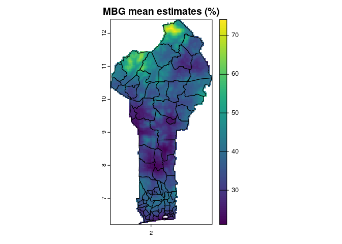

This vignette introduces mbg, a package for modern
Model-Based Geostatistics. This package offers tools for spatial
regression analysis:
- Running Bayesian geostatistical models that relate point-georeferenced outcome data to underlying spatial patterns
- Fitting machine learning algorithms with point-georeferenced outcome data and raster covariate data
- Fast aggregation from (gridded, continuous) raster estimates to (discrete) polygon boundaries, allowing for fractional splitting of raster grid cells and population weighting. A common application for aggregation is generating administrative summaries of fine-scale raster data
mbg combines functions from several packages:
-
INLA: for running Bayesian geostatistical models -
data.table: for handling tabular data -
sffor handling polygons -
terrafor handling raster data -
caretfor running ML models with point outcomes and raster predictors
In this tutorial, we will run a simple mbg model with
prepared data to demonstrate core package functions.
Setting up
Load the mbg package, as well as the
data.table, sf, and terra
packages for data processing, and the ggplot2 package for
plotting.
For this tutorial, we will estimate stunting rates among children under 5 years of age across Benin. Load point observations of this outcome from the package data and print the first few rows:
# Outcome: child stunting
outcomes <- data.table::fread(
system.file('extdata/child_stunting.csv', package = 'mbg')
)| cluster_id | indicator | samplesize | x | y |
|---|---|---|---|---|
| 3 | 5 | 16 | 1.762278 | 6.267199 |
| 4 | 5 | 14 | 2.044534 | 6.335044 |
| 5 | 2 | 13 | 2.420548 | 6.346753 |
| 6 | 1 | 17 | 2.371199 | 6.349460 |
| 7 | 8 | 20 | 1.889197 | 6.351104 |
| 8 | 4 | 23 | 2.369804 | 6.354230 |
The outcome data has 505 rows, each representing one surveyed location, and five columns:
- cluster_id: A unique identifier for each surveyed location
- samplesize: The number of children under 5 surveyed at the location
- indicator: The outcome of interest—in this case, the number of sampled children who met the definition for stunting
- x: The surveyed location’s longitude
- y: The surveyed location’s latitude
Let’s map this survey data over a map of Benin.
# Administrative boundaries
communes <- sf::st_read(
system.file('extdata/Benin_communes.gpkg', package = 'mbg'),
quiet = TRUE
)
# Convert point data to sf
outcome_sf <- sf::st_as_sf(
outcomes,
coords = c('x', 'y'),
crs = sf::st_crs(communes)
)
outcome_sf$stunting_rate <- outcome_sf$indicator / outcome_sf$samplesize
ggplot2::ggplot() +
ggplot2::geom_sf(data = communes) +
ggplot2::geom_sf(
data = outcome_sf,
ggplot2::aes(color = stunting_rate, size = samplesize),
alpha = 0.75
) +
ggplot2::scale_size_continuous(range = c(0.5, 3)) +
ggplot2::scale_color_gradientn(
colors = terra::map.pal('viridis'),
labels = scales::percent
) +
ggplot2::labs(
title = 'Stunting point data',
color = 'Observed\nstunting\nrate',
size = 'Sample\nsize'
) +
ggplot2::theme_minimal()
We can see that there seem to be spatial patterns in the surveyed stunting data—stunting generally seems to be lower around the urban regions of Porto Novo in the coastal south and Parakou in the center north, and higher in the far north and the inland south. To better understand the underlying trends in stunting risk across the country, we would ideally like to:
- Adjust for noise in the outcome due to small sample sizes in the point-level survey data;
- Understand likely stunting risk not just at surveyed points, but at locations across the entire country;
- Incorporate data about possible predictors of child stunting and spatial trends to inform our estimates, and;
- Propagate uncertainty due to small sample sizes, uncertain predictor relationships, and distance to data points into our estimates for all locations.
A Bayesian geostatistical model can accomplish all of these goals. We will fit a Bayesian geostatistical model to the outcome data, with three potential predictors formatted as raster surfaces:
- Travel time to the nearest city, in minutes
- Enhanced vegetation index (EVI)
- Mean annual temperature
# Spatial covariates
covariates <- list(
access = terra::rast(system.file('extdata/access.tif', package = 'mbg')),
evi = terra::rast(system.file('extdata/evi.tif', package = 'mbg')),
temperature = terra::rast(system.file('extdata/temperature.tif', package = 'mbg'))
)
# Plot the covariates
plot(terra::rast(covariates), nr = 1)Building MBG model inputs
The geostatistical model takes three more arguments:
-
id_raster: Aterra::SpatRasterthat lays out the prediction grid. The model will make predictions for all non-NA cells in theid_raster. -
aggregation_table(data.table::data.table, optional): Used to aggregate model estimates from grid cells to commune polygons, preserving uncertainty -
population_raster(terra::SpatRaster, optional): population-based indicators like child stunting should be aggregated using population weighting, which places greater weight on grid cells with higher populations when summarizing those grid cell results by polygon.
# Create ID raster
id_raster <- mbg::build_id_raster(
polygons = communes,
template_raster = covariates[[1]]
)
# Table to help with aggregation to higher administrative levels
aggregation_table <- mbg::build_aggregation_table(
polygons = communes,
id_raster = id_raster,
polygon_id_field = 'commune_code'
)
# Population raster: used for aggregation to administrative boundaries
population_raster <- terra::rast(
system.file('extdata/under_5_population.tif', package = 'mbg')
)Fit the geostatistical model
The entire Bayesian geostatistical regression workflow can be run
using the mbg::MbgModelRunner class. The
MbgModelRunner$new() method creates a new instance of the
class, and the MbgModelRunner$run_mbg_pipeline() runs the
entire workflow based on the passed inputs.
The following code block runs the mbg model using mainly
default settings. A typical workflow can take a few minutes to finish,
although intermediate steps will be printed to screen. Because we want a
regression intercept in this model, the first line in the code block
below creates the intercept as one of the covariate rasters.
# Add an intercept to the model
covariates$intercept <- covariates[[1]] * 0 + 1
## Run MBG models
model_runner <- MbgModelRunner$new(
input_data = outcomes,
id_raster = id_raster,
covariate_rasters = covariates,
aggregation_table = aggregation_table,
aggregation_levels = list(
commune = c('commune_code', 'commune', 'department_code', 'department'),
region = c('department_code', 'department')
),
population_raster = population_raster
)
model_runner$run_mbg_pipeline()
#> MBG model fitting
#> MBG model fitting: 13.857 sec elapsed
#> Generating model predictions
#> Parameter posterior samples
#> Parameter posterior samples: 6.415 sec elapsed
#> Cell draws
#> Cell draws: 2.123 sec elapsed
#> Summarize draws
#> Summarize draws: 0.817 sec elapsed
#> Generating model predictions: 9.357 sec elapsed
#> Running population-weighted aggregation from grid cells to polygonsPlot gridded estimates
The model makes predictions at each grid cell, with some uncertainty associated with each grid cell prediction. We capture that uncertainty by taking many (by default, 250) samples from the range of plausible model estimates and generating summary statistics across those samples.
Once the geostatistical workflow has finished, we can pull the
gridded raster model predictions from the
MbgModelRunner$grid_cell_predictions attribute. This
attribute is a list with the following items:
-
'parameter_draws'(matrix): Samples of the underlying model parameters -
'cell_draws'(matrix): Samples of model estimates at each grid cell location from theid_raster -
'cell_pred_mean'(terra::SpatRaster): The mean estimates across all sampledcell_draws, represented as a raster. -
'cell_pred_lower'(terra::SpatRaster): Lower bounds of an uncertainty interval, summarized across the sampledcell_drawsand represented as a raster. By default, we use a 95% uncertainty interval, so this raster shows the 2.5th percentile across the samples for each grid cell. -
'cell_pred_upper'(terra::SpatRaster): Upper bounds of the uncertainty interval, represented as a raster. By default, shows the 97.5th percentile of samples for each grid cell.
We can plot the mean estimates from the geostatistical model:
# Get predictions by pixel
grid_cell_predictions <- model_runner$grid_cell_predictions
# Plot mean estimates
plot(
grid_cell_predictions$cell_pred_mean * 100,
main = 'MBG mean estimates (%)'
)
lines(communes)
We can also show the width of the 95% uncertainty interval by subtracting the “lower” from the “upper” summary raster:
# Plot estimate uncertainty
plot(
(grid_cell_predictions$cell_pred_upper - grid_cell_predictions$cell_pred_lower) * 100,
col = sf::sf.colors(n = 100),
main = 'MBG estimates: 95% uncertainty interval width (%)'
)
lines(communes)Compare these gridded estimates to the underlying point data. The results seem to meet our goals for estimating stunting risk across Benin:
- Gridded estimates are available for every region in Benin, not just at survey points
- The mean estimates for stunting risk show a similar spatial pattern to the underlying point data
- Some extreme values from the point data, which may have been noisy due to small sample sizes, have been smoothed out in these estimates
- Model uncertainty, as shown by the width of the 95% uncertainty interval, is higher in areas that were far from any surveyed points.
- Underlying relationships between the raster predictors and the point outcomes seem to have influenced estimates: for example, locations with a higher travel time to cities generally also have higher estimated stunting risk.
Many of these observations can be quantified and tested, as demonstrated in later vignettes.
Plot aggregated estimates
Each sample from the geostatistical model yields a candidate map, a single realization of the outcome across each pixel in the study area that is consistent with the fitted model parameters and uncertainty. These samples can be individually aggregated to administrative boundaries, preserving uncertainty, and then summarized.
Aggregated samples and summaries are available from the
MbgModelRunner$aggregated_predictions attribute. This
attribute is a named list, where each item contains polygon estimates
for each of the passed aggregation_levels. Each of those
levels has two items:
-
'draws'(data.table::data.table): Predictive model samples by aggregated polygon unit -
'summary'(data.table::data.table): Summaries ofdrawsfor each aggregated polygon unit, including the mean and the bounds of the 95% uncertainty interval across samples
We can merge the commune estimate summaries back onto the
communes sf object to plot the results.
# Get predictions by commune
aggregated_predictions <- model_runner$aggregated_predictions
commune_summary <- aggregated_predictions$commune$summary
summary_sf <- merge(
x = communes,
y = commune_summary,
by = c('commune_code', 'commune', 'department_code', 'department')
)
# Plot aggregated estimates by commune
ggplot2::ggplot() +
ggplot2::geom_sf(data = summary_sf, ggplot2::aes(fill = mean), color = 'black') +
ggplot2::scale_fill_gradientn(
colors = terra::map.pal('viridis'),
breaks = seq(0.15, 0.45, by = .05),
labels = scales::percent
) +
ggplot2::labs(
title = 'MBG mean estimates by commune',
fill = "Estimated\nstunting\nrate"
) +
ggplot2::theme_minimal()We can also plot the width of the 95% uncertainty interval by commune.
# Plot aggregated uncertainty interval widths by commune
summary_sf$ui <- summary_sf$upper - summary_sf$lower
ggplot2::ggplot() +
ggplot2::geom_sf(data = summary_sf, ggplot2::aes(fill = ui), color = 'black') +
ggplot2::scale_fill_gradientn(
colors = sf::sf.colors(n = 100),
labels = scales::percent
) +
ggplot2::labs(
title = 'MBG 95% uncertainty interval width by commune',
fill = 'Uncertainty\ninterval\nwidth'
) +
ggplot2::theme_minimal()Note that in general, uncertainty intervals tend to be wider at the pixel level than for aggregated polygons. This is because some sources of uncertainty are uncorrelated between pixels, and this uncorrelated uncertainty shrinks when estimates are aggregated across pixels.